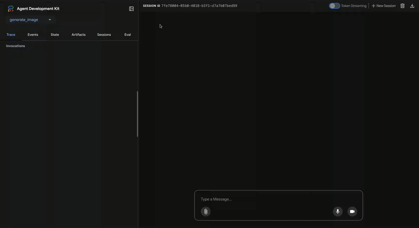

為什麼要評估 agent¶
在傳統軟體開發中，單元測試（unit tests）與整合測試（integration tests）能夠確保程式碼如預期運作，並在變更過程中維持穩定。這些測試提供明確的「通過／失敗」訊號，為後續開發提供指引。然而，大型語言模型 (LLM) agent 帶來了變異性，使得傳統測試方法變得不足。
由於模型本質上具有機率性，決定性的「通過／失敗」斷言往往不適用於評估 agent 的表現。因此，我們需要對最終輸出以及 agent 的軌跡（trajectory）——也就是達成解決方案過程中的一連串步驟——進行質性評估。這包括評估 agent 的決策品質、推理過程以及最終結果。
這看似需要額外投入大量工作，但自動化評估的投資會很快帶來回報。如果你打算將專案推進到原型階段之外，這是一項高度建議採用的最佳實踐。

準備 agent 評估¶
在自動化 agent 評估之前，請先明確定義目標與成功標準：
- 定義成功： 什麼情況下你的 agent 被視為成功？
- 識別關鍵任務： 你的 agent 必須完成哪些核心任務？
- 選擇相關指標： 你會追蹤哪些指標來衡量效能？
這些考量將協助你設計評估情境，並有效監控 agent 在真實環境中的行為。
評估什麼？¶
要讓 proof-of-concept（概念驗證）與可正式部署的 AI agent 之間順利銜接，必須建立一套健全且自動化的評估框架。與僅關注最終輸出的生成式模型評估不同，agent 評估需要更深入理解決策過程。agent 評估可分為兩個部分：
- 評估軌跡與工具使用： 分析 agent 為達成解決方案所採取的步驟，包括工具選擇、策略及其方法的效率。
- 評估最終回應： 評估 agent 最終輸出的品質、相關性與正確性。
軌跡（trajectory）就是 agent 在回應使用者前所採取的步驟清單。我們可以將其與預期 agent 應採取的步驟清單進行比較。
評估軌跡與工具使用¶
在回應使用者之前，agent 通常會執行一系列動作，我們稱之為「軌跡」（trajectory）。例如，它可能會將使用者輸入與 session history 比較以釐清術語，或查閱政策文件、搜尋知識庫，甚至呼叫 API 來儲存工單。我們將這一連串動作稱為「軌跡」。評估 agent 的表現時，需要將實際軌跡與預期（或理想）軌跡進行比較。這種比較能揭露 agent 流程中的錯誤與低效率。預期軌跡代表「事實標準」（ground truth）——也就是我們預期 agent 應採取的步驟清單。
例如：
# Trajectory evaluation will compare
expected_steps = ["determine_intent", "use_tool", "review_results", "report_generation"]
actual_steps = ["determine_intent", "use_tool", "review_results", "report_generation"]
有多種基於真實標註（ground-truth）的軌跡評估方法：
- 完全符合（Exact match）： 需要與理想軌跡完全一致。
- 順序符合（In-order match）： 需要正確的動作且順序正確，但允許有額外的動作。
- 任意順序符合（Any-order match）： 需要正確的動作，順序不限，允許有額外的動作。
- 精確率（Precision）： 衡量預測動作的相關性／正確性。
- 召回率（Recall）： 衡量預測中捕捉到多少必要動作。
- 單一工具使用（Single-tool use）： 檢查是否包含特定動作。
選擇合適的評估指標，取決於你的 agent 的具體需求與目標。例如，在高風險場景下，完全符合可能非常關鍵；而在較為彈性的情境中，順序符合或任意順序符合就可能已經足夠。
評估在 Agent Development Kit (ADK) 中的運作方式¶
Agent Development Kit (ADK) 提供兩種方法，用於根據預先定義的資料集和評估標準來評估 agent 的表現。這兩種方法在概念上相似，但它們能處理的資料量不同，這通常決定了各自適用的情境。
方法一：使用測試檔案¶
這種方法涉及建立個別的測試檔案，每個檔案代表一次簡單的 agent 與模型互動（即一個 session）。這在 agent 開發過程中最為有效，可作為單元測試的一種形式。這些測試設計為可快速執行，應聚焦於簡單 session 的複雜度。每個測試檔案包含一個 session，該 session 可以包含多個回合（turn）。一個回合代表使用者與 agent 之間的一次互動。每個回合包含：
User Content：使用者發出的查詢。Expected Intermediate Tool Use Trajectory：我們期望 agent 為正確回應使用者查詢而進行的工具呼叫 (tool calls)。Expected Intermediate Agent Responses：這些是 agent（或子 agent）在產生最終答案過程中產生的自然語言回應。這些自然語言回應通常是多 agent 系統的產物，當你的主 agent 依賴子 agent 來達成目標時會產生這些中間回應。這些中間回應對最終使用者來說可能有用也可能無用，但對於系統開發者／擁有者來說卻非常重要，因為它們能讓你確信 agent 走對了產生最終回應的路徑。Final Response：agent 預期的最終回應。
你可以為檔案取任何名稱，例如 evaluation.test.json。框架只會檢查 .test.json 這個副檔名，檔名的前綴部分沒有限制。這些測試檔案是以正式的 Pydantic 資料模型為基礎。兩個主要的 schema 檔案分別是
Eval Set 和
Eval Case。
以下是一個包含幾個範例的測試檔案：
（注意：以下註解僅供說明用途，若要成為有效的 JSON，請將註解移除。）
# Do note that some fields are removed for sake of making this doc readable.
{
"eval_set_id": "home_automation_agent_light_on_off_set",
"name": "",
"description": "This is an eval set that is used for unit testing `x` behavior of the Agent",
"eval_cases": [
{
"eval_id": "eval_case_id",
"conversation": [
{
"invocation_id": "b7982664-0ab6-47cc-ab13-326656afdf75", # Unique identifier for the invocation.
"user_content": { # Content provided by the user in this invocation. This is the query.
"parts": [
{
"text": "Turn off device_2 in the Bedroom."
}
],
"role": "user"
},
"final_response": { # Final response from the agent that acts as a reference of benchmark.
"parts": [
{
"text": "I have set the device_2 status to off."
}
],
"role": "model"
},
"intermediate_data": {
"tool_uses": [ # Tool use trajectory in chronological order.
{
"args": {
"location": "Bedroom",
"device_id": "device_2",
"status": "OFF"
},
"name": "set_device_info"
}
],
"intermediate_responses": [] # Any intermediate sub-agent responses.
},
}
],
"session_input": { # Initial session input.
"app_name": "home_automation_agent",
"user_id": "test_user",
"state": {}
},
}
],
}
檔案測試可以組織在資料夾中。選擇性地，資料夾內也可以包含test_config.json檔案，用於指定評估標準。
如何遷移未符合 Pydantic schema 的測試檔案？¶
注意：如果你的測試檔案未遵循 EvalSet schema 檔案，則本節內容適用於你。
請使用AgentEvaluator.migrate_eval_data_to_new_schema來將你現有的*.test.json檔案遷移至以 Pydantic 為基礎的 schema。
此工具會接收你目前的測試資料檔案，以及可選的初始 session 檔案，並產生一個以新格式序列化資料的單一輸出 JSON 檔案。由於新 schema 更具一致性，舊的測試資料檔案和初始 session 檔案都可以忽略（或移除）。
第二種方式：使用 Evalset 檔案¶
Evalset 方式利用一個專用的資料集，稱為「evalset」，用於評估 agent 與模型的互動。與測試檔案類似，evalset 也包含範例互動。不過，evalset 可以包含多個、甚至較長的 session，非常適合模擬複雜的多輪對話。由於能夠表達複雜 session，evalset 特別適合用於整合測試。這類測試通常比單元測試執行頻率低，因為其規模較大。
一個 evalset 檔案包含多個「evals」，每個 eval 代表一個獨立的 session。每個 eval 由一個或多個「turns」組成，這些 turn 包含使用者查詢、預期的工具使用、預期的中介 agent 回應，以及參考回應。這些欄位的意義與測試檔案方式相同。每個 eval 都有唯一名稱標識。此外，每個 eval 也包含相關的初始 session state。
由於手動建立 evalset 可能較為複雜，因此我們提供了 UI 工具，協助你擷取相關 session，並輕鬆轉換為 evalset 中的 eval。你可以在下方進一步了解如何使用網頁 UI 進行評估。以下是一個包含兩個 session 的 evalset 範例。Evalset 檔案是以正式的 Pydantic 資料模型為基礎。兩個主要的 schema 檔案分別是 Eval Set 與 Eval Case。
Warning
此 evalset 評估方法需要使用付費服務， Vertex Gen AI Evaluation Service API。
（注意：以下註解僅為說明用途，若要使 JSON 有效，請將其移除。）
# Do note that some fields are removed for sake of making this doc readable.
{
"eval_set_id": "eval_set_example_with_multiple_sessions",
"name": "Eval set with multiple sessions",
"description": "This eval set is an example that shows that an eval set can have more than one session.",
"eval_cases": [
{
"eval_id": "session_01",
"conversation": [
{
"invocation_id": "e-0067f6c4-ac27-4f24-81d7-3ab994c28768",
"user_content": {
"parts": [
{
"text": "What can you do?"
}
],
"role": "user"
},
"final_response": {
"parts": [
{
"text": "I can roll dice of different sizes and check if numbers are prime."
}
],
"role": null
},
"intermediate_data": {
"tool_uses": [],
"intermediate_responses": []
},
},
],
"session_input": {
"app_name": "hello_world",
"user_id": "user",
"state": {}
},
},
{
"eval_id": "session_02",
"conversation": [
{
"invocation_id": "e-92d34c6d-0a1b-452a-ba90-33af2838647a",
"user_content": {
"parts": [
{
"text": "Roll a 19 sided dice"
}
],
"role": "user"
},
"final_response": {
"parts": [
{
"text": "I rolled a 17."
}
],
"role": null
},
"intermediate_data": {
"tool_uses": [],
"intermediate_responses": []
},
},
{
"invocation_id": "e-bf8549a1-2a61-4ecc-a4ee-4efbbf25a8ea",
"user_content": {
"parts": [
{
"text": "Roll a 10 sided dice twice and then check if 9 is a prime or not"
}
],
"role": "user"
},
"final_response": {
"parts": [
{
"text": "I got 4 and 7 from the dice roll, and 9 is not a prime number.\n"
}
],
"role": null
},
"intermediate_data": {
"tool_uses": [
{
"id": "adk-1a3f5a01-1782-4530-949f-07cf53fc6f05",
"args": {
"sides": 10
},
"name": "roll_die"
},
{
"id": "adk-52fc3269-caaf-41c3-833d-511e454c7058",
"args": {
"sides": 10
},
"name": "roll_die"
},
{
"id": "adk-5274768e-9ec5-4915-b6cf-f5d7f0387056",
"args": {
"nums": [
9
]
},
"name": "check_prime"
}
],
"intermediate_responses": [
[
"data_processing_agent",
[
{
"text": "I have rolled a 10 sided die twice. The first roll is 5 and the second roll is 3.\n"
}
]
]
]
},
}
],
"session_input": {
"app_name": "hello_world",
"user_id": "user",
"state": {}
},
}
],
}
如何遷移未依照 Pydantic schema 的 eval set 檔案？¶
注意：如果你的 eval set 檔案未遵循 EvalSet schema 檔案，則本節內容適用於你。
根據誰負責維護 eval set 資料，有兩種路徑：
-
由 Agent Development Kit (ADK) UI 維護的 eval set 資料
如果你使用 Agent Development Kit (ADK) UI 來維護 eval set 資料，則無需進行任何操作。 -
eval set 資料由人工開發與維護，並於 ADK eval CLI 使用
遷移工具正在開發中，在此之前，ADK eval CLI 指令仍會繼續支援舊格式的資料。
評估標準¶
評估標準用於定義 agent 在 evalset 上的表現如何被衡量。目前支援以下指標：
tool_trajectory_avg_score：此指標會比較 agent 在評測過程中實際使用的工具與expected_tool_use欄位中定義的預期工具使用情境。每一個工具使用步驟若相符則得分 1，若不符則得分 0。最終分數為這些比對的平均值，代表工具使用路徑的準確率。response_match_score：此指標會比較 agent 最終的自然語言回應與預期的最終回應（儲存在reference欄位）。我們使用 [ROUGE](https://en.wikipedia.org/wiki/ROUGE_(metric) 指標來計算兩者之間的相似度。
如果未提供評估標準，則會使用以下預設設定：
tool_trajectory_avg_score：預設為 1.0，代表工具使用路徑需 100% 完全相符。response_match_score：預設為 0.8，允許 agent 的自然語言回應有小幅度的誤差。
以下是一個指定自訂評估標準的 test_config.json 檔案範例：
如何使用 Agent Development Kit (ADK) 執行評估¶
作為開發者，你可以透過以下方式，使用 Agent Development Kit (ADK) 來評估你的 agent：
- 網頁 UI（
adk web）： 透過網頁介面互動式地評估 agent。 - 程式化（
pytest）： 使用pytest與測試檔案，將評估整合到你的測試流程中。 - 命令列介面（Command Line Interface,
adk eval）： 直接從命令列對現有的評估集檔案執行評估。
1. adk web - 透過網頁 UI 執行評估¶
網頁 UI 提供互動式方式來評估 agent、產生評估資料集，並詳細檢視 agent 行為。
步驟 1：建立並儲存測試案例¶
- 執行以下指令啟動網頁伺服器：
adk web <path_to_your_agents_folder> - 在網頁介面中，選擇一個 agent 並與其互動以建立 session。
- 導航至介面右側的 Eval 分頁。
- 建立新的評估集，或選擇現有的評估集。
- 點擊 「Add current session」，將對話儲存為新的評估案例。
步驟 2：檢視與編輯你的測試案例¶
案例儲存後，你可以點擊清單中的 ID 來檢視細節。若需修改，請點擊 Edit current eval case（鉛筆圖示）。這個互動式檢視允許你：
- 修改 agent 的文字回應，以優化測試情境。
- 刪除對話中的個別 agent 訊息。
- 若不再需要，刪除整個評估案例。

步驟 3：以自訂指標執行評估¶
- 從你的評估集中選擇一個或多個測試案例。
- 點擊 Run Evaluation。此時會出現 EVALUATION METRIC 對話框。
- 在對話框中，使用滑桿設定以下門檻值：
- Tool trajectory avg score
- Response match score
- 點擊 Start，即可依據你的自訂標準執行評估。每次執行所使用的指標都會被記錄在評估歷史中。

步驟 4：分析結果¶
評估執行完畢後，你可以分析結果：
- 分析執行失敗：點擊任何 Pass 或 Fail 結果。若為失敗，可將滑鼠移至
Fail標籤上，查看 實際輸出 vs. 預期輸出 的並排比較，以及導致失敗的分數。
使用 Trace 檢視進行除錯¶
Agent Development Kit (ADK) 網頁 UI 內建強大的 Trace 分頁，可用於除錯 agent 行為。此功能適用於任何 agent session，不僅限於評估期間。
Trace 分頁提供詳細且互動式的方式，檢視 agent 的執行流程。trace 會自動依使用者訊息分組，方便你追蹤事件鏈。
每一筆 trace 記錄都是互動式的：
- 滑鼠移至 trace 記錄時，會高亮對應的聊天訊息。
- 點擊 trace 記錄會開啟詳細檢視面板，包含四個分頁：
- Event：原始事件資料。
- Request：傳送給模型的請求。
- Response：從模型收到的回應。
- Graph：工具呼叫 (tool calls) 與 agent 邏輯流程的視覺化圖表。


Trace 檢視中的藍色列，表示該互動產生了一個事件。點擊這些藍色列會開啟下方的事件詳細面板，讓你更深入了解 agent 的執行流程。
2. pytest - 程式化執行測試¶
你也可以使用 pytest，將測試檔案納入整合測試流程中。
指令範例¶
範例測試程式碼¶
以下是一個pytest測試案例的範例，會執行單一測試檔案：
from google.adk.evaluation.agent_evaluator import AgentEvaluator
import pytest
@pytest.mark.asyncio
async def test_with_single_test_file():
"""Test the agent's basic ability via a session file."""
await AgentEvaluator.evaluate(
agent_module="home_automation_agent",
eval_dataset_file_path_or_dir="tests/integration/fixture/home_automation_agent/simple_test.test.json",
)
這種方法讓你可以將 agent 評估整合到 CI/CD 流程或更大型的測試套件中。如果你希望為測試指定初始 session state，可以將 session 詳細資訊儲存在檔案中，並傳遞給 AgentEvaluator.evaluate 方法。
3. adk eval - 透過命令列介面 (Command Line Interface, CLI) 執行評估¶
你也可以透過命令列介面（CLI）來執行 eval set 檔案的評估。這會執行與網頁 UI 相同的評估流程，但更適合自動化，例如你可以將這個指令加入到日常建置產生與驗證流程中。
以下是指令範例：
adk eval \
<AGENT_MODULE_FILE_PATH> \
<EVAL_SET_FILE_PATH> \
[--config_file_path=<PATH_TO_TEST_JSON_CONFIG_FILE>] \
[--print_detailed_results]
例如：
adk eval \
samples_for_testing/hello_world \
samples_for_testing/hello_world/hello_world_eval_set_001.evalset.json
以下是每個命令列參數的詳細說明：
AGENT_MODULE_FILE_PATH：指向包含名為 "agent" 模組的__init__.py檔案路徑。"agent" 模組內包含一個root_agent。EVAL_SET_FILE_PATH：評估檔案的路徑。你可以指定一個或多個評估集檔案路徑。預設情況下，會針對每個檔案執行所有評估。如果只想執行某個評估集中的特定評估，請先建立一個以逗號分隔的評估名稱清單，然後將其作為字尾加在評估集檔案名稱後，並以冒號:分隔。- 例如：
sample_eval_set_file.json:eval_1,eval_2,eval_3
This will only run eval_1, eval_2 and eval_3 from sample_eval_set_file.json CONFIG_FILE_PATH：設定檔的路徑。PRINT_DETAILED_RESULTS：在主控台上顯示詳細結果。